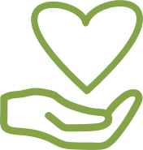
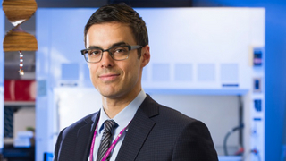
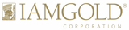
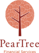
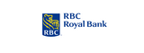
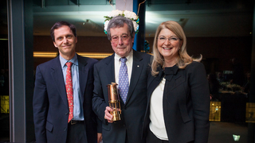
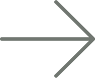
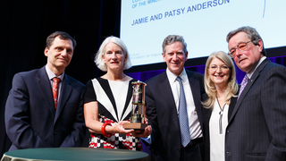

About
Funding Research
Award Dinner
“
Thank you for your interest in the Miner’s Lamp Award!
One in five Canadians will experience mental illness in their lifetime and, of these, over 70% encounter their first symptoms between 16 and 24. Research into the causes of mental illness among young people is therefore essential.
The Miner’s Lamp Award has been raising funds to do this since 2016, thanks to a partnership between IAMGOLD Corporation and University of Toronto Department of Psychiatry, and generous sponsorship from many companies and individuals in different walks of life.
While investing in the future, we believe it’s equally important to recognize individuals whose outstanding leadership in eroding the stigma of mental illness has brought fresh hope to those affected by it. Each year, we honour them with the presentation of the Miner’s Lamp Award and encourage others to follow their lead.
We invite you to help us improve mental health for generations to come by supporting the 2018 Miner’s Lamp Award Dinner.
(Two signatures & titles)
One in five Canadians will experience mental illness in their lifetime and, of these, over 70% encounter their first symptoms between 16 and 24. Research into the causes of mental illness among young people is therefore essential.
The Miner’s Lamp Award has been raising funds to do this since 2016, thanks to a partnership between IAMGOLD Corporation and University of Toronto Department of Psychiatry, and generous sponsorship from many companies and individuals in different walks of life.
While investing in the future, we believe it’s equally important to recognize individuals whose outstanding leadership in eroding the stigma of mental illness has brought fresh hope to those affected by it. Each year, we honour them with the presentation of the Miner’s Lamp Award and encourage others to follow their lead.
We invite you to help us improve mental health for generations to come by supporting the 2018 Miner’s Lamp Award Dinner.
(Two signatures & titles)
A growing body of medical research highlighting the impact of mental illness, a greater
understanding of its physiological origins and clearer evidence of its connection with physical
health...all are cause for optimism.
Building on this optimism requires continuing financial investment. We have chosen to focus on funding research that sows the seeds of new insight into the causes of mental illness among adolescents and young people. Research in this area is underfunded compared to other leading causes of illness and disability, so we want to act quickly to avert the challenges that arise when mental health conditions go undiagnosed and untreated for extended periods.
Since 2016, the Miner’s Lamp Award Campaign has raised over $1m for new research in the prevention and early detection of severe mental illness in adolescents and young people. The 2016 portion of the funds raised is supporting innovative studies at the Centre for Addiction and Mental Health (CAMH). Further research grants using the 2017 funds will be awarded later this year.
IAMGOLD Corporation pays all costs associated with hosting the Miner’s Lamp Award Dinner, so 100% of funds raised go directly to new research.
Building on this optimism requires continuing financial investment. We have chosen to focus on funding research that sows the seeds of new insight into the causes of mental illness among adolescents and young people. Research in this area is underfunded compared to other leading causes of illness and disability, so we want to act quickly to avert the challenges that arise when mental health conditions go undiagnosed and untreated for extended periods.
Since 2016, the Miner’s Lamp Award Campaign has raised over $1m for new research in the prevention and early detection of severe mental illness in adolescents and young people. The 2016 portion of the funds raised is supporting innovative studies at the Centre for Addiction and Mental Health (CAMH). Further research grants using the 2017 funds will be awarded later this year.
IAMGOLD Corporation pays all costs associated with hosting the Miner’s Lamp Award Dinner, so 100% of funds raised go directly to new research.
The 2018 Miner’s Lamp Award Dinner will be held on Tuesday March 27 at The Carlu, Toronto.
Following an inaugural event for 200 members of Canada’s business and academic
communities in March 2016, the Miner’s Lamp Award Dinner moved to The Carlu in April 2017
to accommodate growing demand from the 400 guests who sponsored and attended the event.
By bringing together an influential group of engaged Canadians, accomplished individuals speaking courageously of their own struggles with mental illness, and talented performers, the Miner’s Lamp Award Dinner has become a memorable evening… an opportunity for our community to celebrate progress and renews its commitment to improving mental health for generations to come.
Our 2017 guests saw Sophie Grégoire Trudeau join Steven Page (founder of the Barenaked Ladies) in speaking up for greater understanding of mental illness. In March 2018, we look forward to honouring George Cope, President & CEO, BCE Inc. & Bell Canada, and founder of Bell Let’s Talk, with the Miner’s Lamp Award.
For more details of the 2018 Miner’s Lamp Award Dinner, including sponsorship opportunities at many levels, click here.
By bringing together an influential group of engaged Canadians, accomplished individuals speaking courageously of their own struggles with mental illness, and talented performers, the Miner’s Lamp Award Dinner has become a memorable evening… an opportunity for our community to celebrate progress and renews its commitment to improving mental health for generations to come.
Our 2017 guests saw Sophie Grégoire Trudeau join Steven Page (founder of the Barenaked Ladies) in speaking up for greater understanding of mental illness. In March 2018, we look forward to honouring George Cope, President & CEO, BCE Inc. & Bell Canada, and founder of Bell Let’s Talk, with the Miner’s Lamp Award.
For more details of the 2018 Miner’s Lamp Award Dinner, including sponsorship opportunities at many levels, click here.
SEND ME A DONATION PACKAGE
Donate
Since 2016, the Miner's Lamp Award has brought together a network of engaged leaders from across industries, committed to improving the trajectory and outcomes of mental illness for adolescents and young adults. To date, we have invested over $1 million in groundbreaking research that will help to define the future of mental healthcare and drive the cultural shift around public attitudes towards mental illness. Our ability to invest in groundbreaking research is made possible by the generous support of sponsors like you. Please consider joining us for the 2018 Miner's Lamp Award Dinner. Full details of sponsorship opportunities are available here. [Link to pdf.] Please note that as all costs for the Miner's Lamp Award Dinner are covered by IAMGOLD Corporation, 100% of funds raised go directly into new research.
Partner
While IAMGOLD Corporation covers all costs for the Miner's Lamp Award Dinner, we are fortunate to enjoy the support of partners who contribute in kind in areas of special significance to them. If you would like to explore an in-kind contribution, please contact [TBD]. Thanks in advance for your support for the Miner's Lamp Award!
Your Impact
2
Years since launch
$ 1 Million
Raised
100%

Funds Donated
Your donations at work
Every dollar donated to the Miner's Lamp Award Campaign supports new research into youth mental health. As IAMGOLD covers the cost of the dinner, 100% of proceeds are channelled into new research to support the field’s most promising studies. With the funds raised in 2016, two new studies are under way at Toronto's Centre for Addiction and Mental Health (CAMH).

Aristotle Voineskos
Drs. Joanna Henderson and Aristotle Voineskos are collaborating with child and youth clinics, and using a new approach to identify early signs of psychosis spectrum symptoms.

Dr. Vincenzo De Luca
Dr. Vincenzo De Luca is studying the interaction of early life adversities and schizophrenia vulnerability genes in young people – with a specific focus on how this relates to suicide risk.
With over $630,000 raised at the 2017 Miner's Lamp Award Dinner, further research grants will be awarded in fall 2017.
What's new
2017 Donors



Silver Sponsors
Agnico Eagle Mines
Barrick
Deloitte
EY
KPMG MSLP
Purves Redmond
TD Securities
Bronze Sponsors
Ausenco
Geoff Beattie & Amanda Lang
Black Loon Metals
Blake, Cassels & Graydon LLP
BMO
CAMH
Citi
Detour Gold
Emerging Markets Capital
Evans Investment Counsel
Fasken Martineau
Kinross Gold
Labatt Family
Magris Resources Inc.
Maple Leaf Foods
Morgan Stanley
Paul, Weiss, Rifkind, Wharton & Garrison LLP
Ryan Bignucolo
SickKids Foundation
Stikeman Elliott LLP
Teck Resources
Sponsors
Jamie & Patsy Anderson
John Hunkin
Mancal Corporation
PwC
Jim & Sandi Treliving
Supporters
Barberian's Steak House
Donnelley Financial Siolutions
Maple Leaf Sports & Entertainment

Award Winners
2016

Paul M. Beeston
Paul M. Beeston is known for many achievements. He was the very first employee of the Toronto Blue Jays; the whiz kid accountant who helped bring two World Series championships to Canada. He is a member of the Order of Canada and the beloved Canadian who went on to become president of Major League Baseball. What he is less known for but where his footprint has been no less influential is his work to support people living with mental illness. During his time as chair of the board of trustees at the Centre for Addiction and Mental Health, Paul’s impact was felt at all levels. From supporting an ambitious $1 billion expansion, to handing out cookies on Christmas Day with his wife Kaye to staff who worked in the emergency room, Paul has had an enormous impact on the lives of many.
2017 Winner

Back
2017

Jamie & Patsy Anderson
Mental health has long been a focus of Jamie and Patsy Anderson’s philanthropic commitments. In 2013, building on previous gifts, they generously established a Chair in Child and Youth Mental Health between CAMH, SickKids and the University of Toronto. The Chair enabled development and leadership of an integrated program in this area of mental health.
Jamie and Patsy are equally generous with their time, energy and expertise as volunteers. Patsy joined the Board of Directors of SickKids Foundation in 2001 and served as its Chair from 2006 to 2011, a transformative period for the hospital. Jamie, meanwhile, first joined CAMH’s fundraising campaign in 1998 and has been involved ever since, serving in a number of key governance and fundraising roles, including Co-Chair of the current “Breakthrough” campaign.
Jamie and Patsy are equally generous with their time, energy and expertise as volunteers. Patsy joined the Board of Directors of SickKids Foundation in 2001 and served as its Chair from 2006 to 2011, a transformative period for the hospital. Jamie, meanwhile, first joined CAMH’s fundraising campaign in 1998 and has been involved ever since, serving in a number of key governance and fundraising roles, including Co-Chair of the current “Breakthrough” campaign.
2016 Winner
Back
Gallery
2016
2017